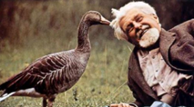
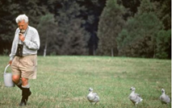

1. 로렌츠의 사상
콘라트 로렌츠(Konrad Lorenz, 1903∼1989)는 오스트리아 출신의 동물행동학자(ethologist)로, 현대 비교행동학(비교심리학)의 기초를 확립한 학자 중 한 사람이다. 그는 니콜라스 틴베르겐(Nikolaas Tinbergen), 칼 폰 프리슈(Karl von Frisch)와 함께 1973년 노벨생리의학상을 수상하였으며, 동물 행동의 본능적 기제와 환경 적응 과정을 연구하였다.
로렌츠의 사상의 핵심은 행동의 진화론적·생물학적 기반에 있다. 그는 동물과 인간의 행동을 단순히 자극과 반응의 연결로 보지 않고, 유전적으로 프로그램된 본능적 행동 패턴이 존재하며, 이는 종의 생존과 번식에 유리하게 진화해 왔다고 주장했다. 그는 행동을 연구할 때 실험실 상황뿐 아니라 자연환경에서의 관찰이 필수적이라고 강조했고, 이를 통해 동물과 인간의 행동을 비교하며 행동의 기원과 발달을 탐구했다.
로렌츠는 특히 사회적 행동과 본능의 상호작용에 관심을 가졌으며, 인간의 공격성, 애착, 사회적 결속과 같은 행동이 생물학적 뿌리를 가진다고 보았다. 그는 이를 통해 인간의 문화적 발달과 윤리적 가치 역시 생물학적 기반 위에 형성된다고 주장하였다.
2. 각인이론
로렌츠가 가장 널리 알려진 업적 중 하나는 각인이론(imprinting)이다. 각인은 생애 초기 특정한 시기에 특정 자극에 노출됨으로써 빠르고 지속적으로 형성되는 독특한 학습 형태를 의미한다. 이는 주로 조류와 일부 포유류에서 나타나며, 특히 어미-자식 관계의 형성과 종 인식에 중요한 역할을 한다. 각인은 본능적 행동과 학습이 결합된 형태로, 특정 시기에 한 번 형성되면 이후 변화가 거의 없다는 점에서 다른 학습 과정과 구별된다.

1) 개념
각인은 학습과 본능의 중간 형태로, 결정적 시기(critical period)또는 민감기(sensitive period)동안 특정 대상이나 자극에 노출되면 그 대상을 지속적으로 따라다니거나 애착을 형성하는 현상이다. 결정적 시기는 종마다 다르며, 예를 들어 새끼 오리나 거위는 부화 직후 수 시간~수일 이내가 이에 해당한다. 이 시기를 지나면 동일한 자극을 제공하더라도 동일한 각인 반응이 나타나지 않는다. 각인은 반복적인 강화가 필요 없는 ‘일회성 학습’이라는 특징을 지니며, 형성 후에는 장기간 지속된다.
2) 실험 사례
로렌츠는 거위 알을 부화기에 넣어 인공적으로 부화시킨 후, 새끼 거위가 태어나자마자 처음 본 대상을 어미로 인식한다는 사실을 발견했다. 자연 상태에서는 어미 거위를 따라다니지만, 실험 상황에서는 로렌츠 자신, 부드러운 공, 심지어 움직이는 상자와 같은 무생물에도 각인이 이루어졌다. 이 실험은 각인이 대상 선택에서 융통성이 낮고, 형성 후 쉽게 바뀌지 않으며, 이후 사회적·생존 행동에 지속적인 영향을 미친다는 점을 보여주었다. 또한 로렌츠는 각인된 대상이 단순히 따라다니는 행동뿐 아니라, 이후 짝짓기 행동, 사회적 유대 형성에도 장기적인 영향을 준다는 사실을 관찰했다.

3. 특징
1) 결정적 시기에 형성되며, 시기가 지나면 발생하지 않음
2) 매우 짧은 시간 안에 이루어지고, 거의 영구적으로 지속됨
3) 후속 행동(따라다니기, 보호 요청, 사회적 유대)에 강력한 영향
4) 생존과 번식에 필수적인 행동과 직결
5) 학습 과정 중에서도 강화 없이 일어나는 비가역적 학습의 대표 사례
4. 시사점
로렌츠의 각인이론은 인간의 초기 애착 형성과 발달 연구에도 중요한 시사점을 주었다. 비록 인간의 애착은 동물의 각인처럼 절대적인 ‘결정적 시기’보다 상대적으로 유연한 민감기 개념에 가깝지만, 영유아기의 안정적인 양육자 관계가 평생의 정서 발달과 사회성에 지대한 영향을 준다는 점은 동일하다.
특히 생후 첫 1~2년 동안의 양육 경험은 이후 대인관계, 정서조절, 자기개념 형성에 장기적 영향을 미친다. 교육·상담 분야에서는 이러한 개념을 토대로, 초기 아동 발달에서 안정된 환경 제공과 일관된 양육 태도가 필요하다는 근거를 마련하였다.
로렌츠는 행동의 진화적 기원과 본능적 패턴의 중요성을 강조하였으며, 각인이론을 통해 초기 경험과 환경이 행동 발달에 미치는 강력한 영향을 실증적으로 제시했다. 그의 연구는 동물행동학뿐 아니라 발달심리학, 교육학, 상담학, 심리치료 등 다양한 분야에서 적용되고 있다.
1) 발달심리학적 시사점: 인간의 초기 발달에서 양육자와의 안정된 상호작용이 장기적인 심리적 건강의 토대가 됨을 시사한다.
2) 교육·상담적 시사점: 영유아기 정서적 결핍이나 불안정한 관계를 경험한 아동에게는 조기 개입 프로그램과 지속적인 정서 지원이 필요하다.
3) 사회·정책적 시사점: 입양, 위탁, 시설 아동에 대한 장기적·안정적 보호 환경 조성이 중요하다.
로렌츠의 각인이론과 보울비의 애착이론을 정리하면 다음과 같다.
| 구분 | 로렌츠 각인이론 | 보울비 애착이론 |
| 연구 대상 | 주로 동물(조류, 일부 포유류) | 인간 영유아 중심 |
| 핵심 개념 | 결정적 시기, 일회성·비가역적 학습 | 민감기, 안전기반, 애착 유형 |
| 형성 시기 | 짧고 엄격한 결정적 시기 | 유연한 민감기(생후 1~2년 중요) |
| 변화 가능성 | 거의 없음 | 후속 경험에 따라 변화 가능 |
| 시사점 | 초기 경험이 종 인식·행동에 결정적 | 초기 양육 환경이 전 생애 발달에 영향 |
참고문헌
Lorenz, K. (1935). Der Kumpan in der Umwelt des Vogels. Journal für Ornithologie, 83, 137–213.
Lorenz, K. (1970). Studies in Animal and Human Behaviour. Cambridge: Harvard University Press.
박성철, 김광웅 (2016). 『발달심리학』. 서울: 학지사.
이현림, 이순형 (2018). 『애착과 인간발달』. 서울: 학지사.
2022.01.22 - [분류 전체보기] - 로렌츠의 각인 이론 - 애착, 신체적, 정서적 민감한 시기
로렌츠의 각인 이론 - 애착, 신체적, 정서적 민감한 시기
로렌츠의 생애 및 사상 로렌츠(Konrad Zacharias Lorenz, 1903~1989)는 오스트리아에서 태어났고 어려서부터 유난히 동물에 관심이 높았다. 의사인 아버지의 희망에 따라 의학공부를 하였으나, 빈 대학에
think-sis.co.kr